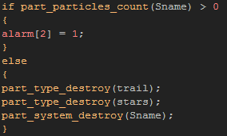

Tutorial
Page 8 of 12
Coding Simple Particles (II)
The explosion of our rocket will also be made from particles and so you should open the code box from the create event of the object "obj_Simple_Firework" and then add in the following code:
Notice that we have switched on the additive blending for this particle, so when we create it on screen it will be brighter and more luminous than those we have created previously. We have also used the color3
and alpha3 functions to give a wider range of color and different fade effect.
Can you guess what it will look like from the code itself? Probably not yet, but once you have made a few particles you'll start to grasp the way certain functions will look and change how your effect works on
screen, making the whole process easier and more fun.
We also need to add in a few lines of code for this object to govern how it will move, and so you should also add in the following to the create event:
With that done, we can set up our control alarms, so add an Alarm[0] Event and then this code:
As you can see from that code, we have used a new function here, part_particles_create(). This function is extremely useful as it permits you to create particles of any type at any point in
the room and without using emitters. This means it is fast and easy to set up and (as you can see in this example) when used every step it can create stream effects, or when used once it can create burst effects
just like an emitter. You can also use the random functions to create the particles over an area and so simulate a rectanglular emitter with a linear distribution!
This function should always be kept in mind when working with particles (as should it's extended function part-aprticles_create_color which permits you create particles of a specific color) due to
the ease of use and small memory footprint that it has.
The next alarm will use this function to burst the star particles from our rocket and set yet another alarm to destroy the instance, so create an Alarm[1] Event with this code:
Finally we need to add in an Alarm[2] Event that will do the clean up of out particle system and destroy the instance:

This event has another new function... part_particles_count. This function is extremely useful for things like timing an instance's destruction as it counts the number of particles currently
in the room from a given system. So the above code checks this value and when it returns that no particles are present, it destroys the particles and the system. It is important to do it this way, as if you destroy
the particles and system while there are particles visible in the room, they will just disappear and that looks horrible to the player of your games.
So, we now have our custom, code based, simple particle firework! We should now duplicate a button object and assign the sprite "spr_Simple_Button" to it, then open up the step event and change the
instance being created by the instance_create() function to "obj_Simple_Firework".
Once that is done, place the new button in the room and run your game. Press each of the buttons in turn and see how the different effects look, and I think you'll agree that the code based effect is by far the nicest,
in a large part due to the brilliance and glow that using the additive blending gives.
When you are happy, save the game and continue onto the next section where we will learn how to create emitters for our particles.
Click on the Next button to go to the next page of the tutorial.